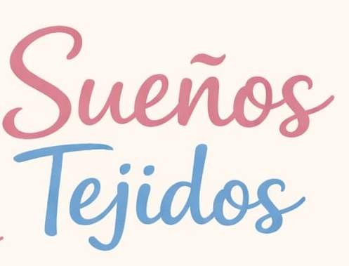

La elección de nuestras letras refleja la personalidad y esencia de la marca.
Estilo handwritten, script amigable. Redondeada, suave y con sensación artesanal, pero legible incluso en tamaños pequeños. No es demasiado cursiva ni demasiado decorativa, está en el punto justo entre personalidad y claridad.
La elegimos porque representa lo hecho a mano y transmite cercanía y ternura. Conecta emocionalmente con quien la ve, sin sentirse corporativa ni fría. "Sueños" es la palabra emocional de la marca, por eso lleva la tipografía con más personalidad.
Estilo sans serif, limpia y ligera. Moderna, simple y equilibrada, sin adornos ni elementos decorativos. Su función es aportar estabilidad visual al conjunto.
La elegimos porque equilibra la tipografía handwritten y evita que el logo se vea demasiado informal. Aporta profesionalismo y mejora la legibilidad. "Tejidos" es la palabra funcional de la marca, por eso necesita una tipografía que transmita solidez.
Ninguna de las dos tipografías funciona igual de bien sola. La handwritten sola resultaría demasiado informal; la sans serif sola, demasiado fría. Juntas logran el equilibrio que define a Sueños Tejidos: artesanal pero profesional, tierna pero vendible, emocional pero escalable.
La tipografía principal transmite calidez y creatividad artesanal, mientras que la secundaria aporta claridad y profesionalismo. El resultado es una identidad visual delicada pero comercialmente sólida.
